Как муха держится на потолке?
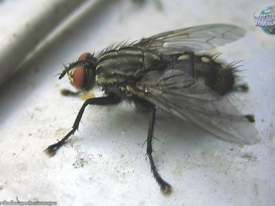Ответ
– На лапках мухи выделяется особый жир, с помощью которого муха может держаться даже на стекле.
Зачем белке хвост?
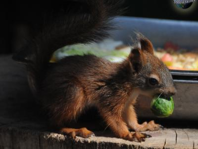Ответ
– хвост служит для белки парашютом и рулем во время прыжка.
Почему медведь уходит в спячку?
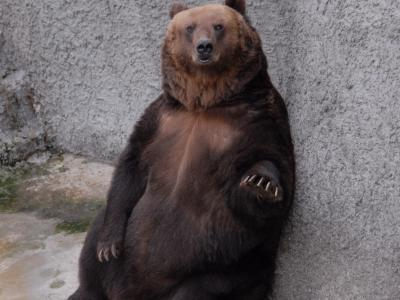Ответ
– если бы медведь не уходил в зимнюю спячку, он бы мог умереть от голода, так как зимой ему не хватит еды. Во время спячки медведь очень экономно расходует свои запасы жира, накопленные перед за лето и осень.
Зачем верблюду горб?

Ответ
– в горбу верблюд хранит жир на «черный» день.
Почему кузнечик стрекочет?
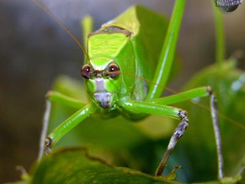Ответ
– Самцы кузнечиков стрекочут для привлечения внимания. У кузнечиков на крыльях есть особая жилка, которую они используют, как смычок.
Зачем жирафу такая длинная шея?
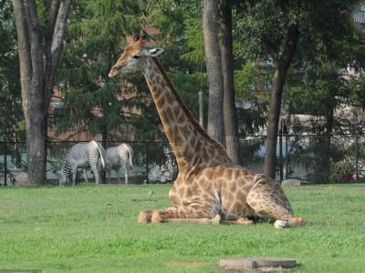Ответ
– жирафу длинная шея помогает срывать листья с высоких деревьев.
Зачем кошки "перебирают" лапами?
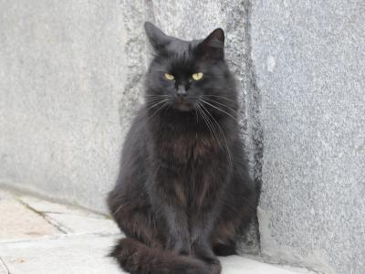Ответ
– когда котята кушают молоко у мамы-кошки, они работают лапками для того, чтобы у кошки выработалось как можно больше молока. Эти движения ассоциируются у котят с теплом, мягкостью и приятными ощущениями. Поэтому, когда коту хорошо, он непроизвольно начинает «перебирать» лапками, «вспоминая» детство.
Почему птицы улетают на Юг?
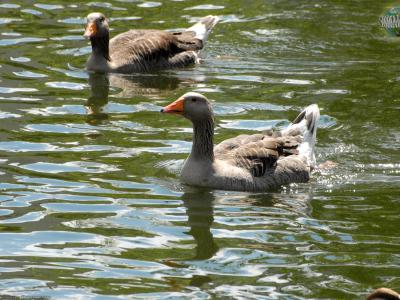Ответ
– если говорить о насекомоядных птицах, то они улетают на зиму в теплые края, потому что зимой им нечего было бы есть.
Почему детеныши кабанов полосатые?
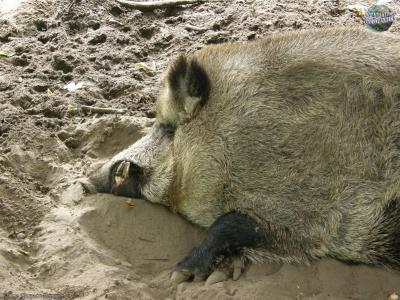Ответ
– полосатая окраска маленьких кабанят носит защитную функцию, они помогают им маскироваться. Полоски напоминают игру света и тени в лесу.
Из чего пчелы делают мед?
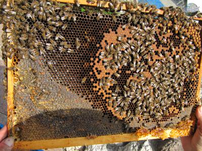Ответ
– пчелы делают мед из пыльцы цветов.
Почему курицы не летают?
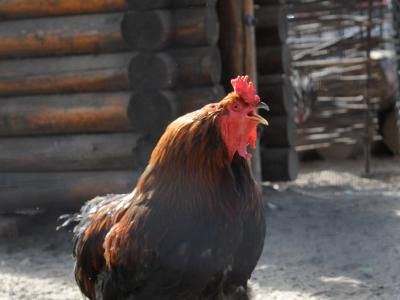Ответ
– курица - искусственно выведенная птица. У нее тяжелая кость и крылья, не приспособленные для полета.
Зачем собака высовывает язык?
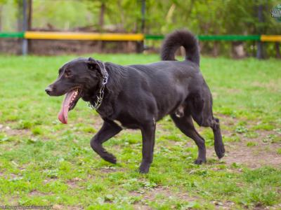Ответ
– когда собаке жарко, она «потеет» через язык. Влага с языка испаряется, и температура тела снижается.
Как верблюд обходится без воды?
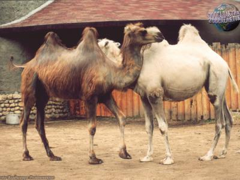Ответ
– Вода у верблюда хранится не в горбу, а во всем теле равномерно. Его организм очень бережно расходует воду. Поэтому, ему вполне хватает той воды, которую он получает из пищи.
Почему собаки не любят кошек?
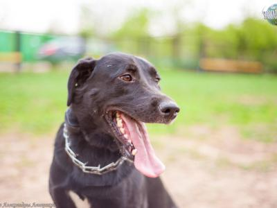Ответ
– не все собаки не любят кошек. У каких-то пород (например, охотничьих), силен инстинкт добытчика, и кошка воспринимается, как добыча. В некоторых случаях, собака проявляет интерес и любопытство к кошке и бежит за ней для того, чтобы поиграть и пообщаться.
Почему крокодилы плачут?
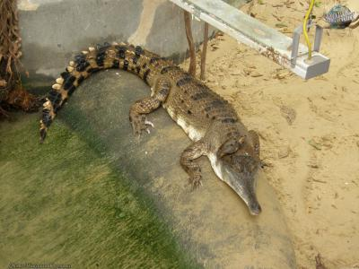Ответ
– со «слезами» из организма крокодила выводятся излишние соли. К тому же, «слезы» защищают глаза крокодила от грязи и бактерий.
Почему слоны боятся мышей?
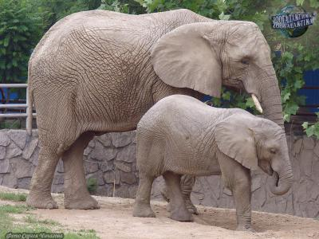Ответ
– есть версия, что мышь может забраться к слону в хобот и перекрыть дыхание. Однако, слону достаточно лишь пару раз чихнуть для того, чтобы решить проблему.
Почему зебра полосатая?
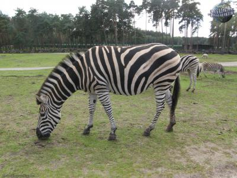Ответ
– полосы зебры приводят в замешательство хищника, позволяя зебре спастись бегством.
Почему мы не видим голубят?
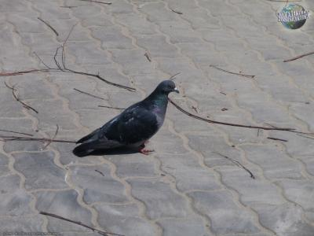Ответ
– голуби строят свои гнезда в местах, недоступных для людей. Голубята проводят в гнезде все свое детство и покидают его, уже приобретя привычный вид.
Зачем лошади подкова?
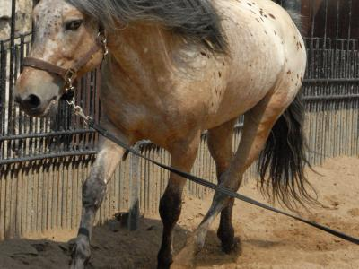Ответ
– подкова нужна, чтобы защитить копыта от износа и от травмирующего действия твердого грунта.
Почему ящерица отбрасывает хвост?
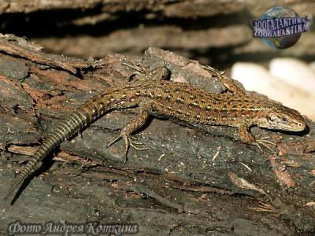Ответ
– в случае опасности, ящерица управляет этим процессом «силой мысли». Отбросив хвост, она успевает скрыться.
Почему птицы выстраиваются в косяк?
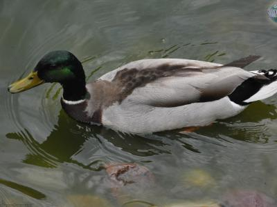Ответ
– впереди клина летит самая сильная птица. Она принимает на себя наибольшее сопротивление воздуха. Остальные птицы выстраиваются таким образом, чтобы сделать полет максимально легким и принимать на себя наименьшее сопротивление.
Почему у коровы всегда понос, а у козы-никогда?
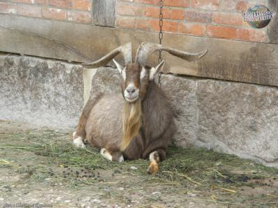Ответ
– коровы не берегут воду, так как издавна их предки паслись на зеленых пастбищах, богатых растительностью. А предки коз напротив, в условиях сухого климата, были вынуждены дорожить каждой капелькой жидкости.
Почему у слона хобот?
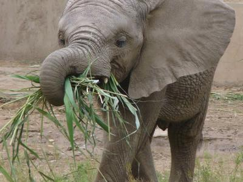Ответ
– Хобот слона – это удлиненная верхняя губа, сросшаяся с носом, которая служит слону не только как орган обоняния, но и как рука. В силу своего строения, без хобота слон умер бы от голода, потому что не смог бы дотянуться до еды.
Зачем кошке усы?
Ответ
– Усы для кошки – важный орган осязания, способный зафиксировать любое движение либо шорох даже в полной темноте. Они просто незаменимы на охоте. Кроме того, именно через усы кошка может отличить горячее от холодного, что нередко спасает ей жизнь.
Почему рыбы не могут жить без воды?
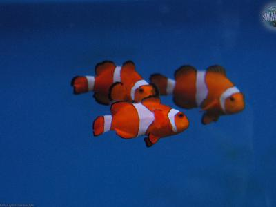Ответ
– Рыбы, как и все остальные животные, не могут жить без кислорода. Но их организм устроен несколько иначе, чем наш: вместо легких, у них жабры, которые извлекают кислород из воды. Если рыбу вытащить из воды, она, лишившись доступа к кислороду, погибнет.
Как паук плетет паутину?
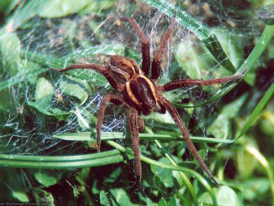Ответ
– У паука в животе располагаются специальные железы, которые производят жидкий шелк. При контакте с воздухом, он тут же застывает, превращаясь в тончайшие нити.
Почему у павлина такой красивый хвост?
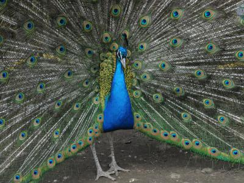Ответ
– Красивый хвост есть только у самцов павлинов. Он нужен им для привлечения самок. Чем красивее у павлина хвост, тем больше шансов у него привлечь к себе внимание противоположного пола.
Почему рыба не тонет?
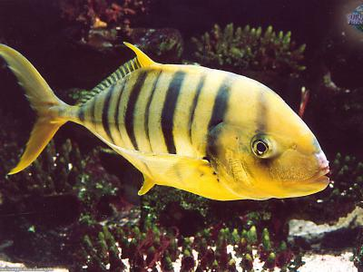Ответ
– У рыб есть плавательный пузырь, который наполнен кислородом и не позволяет рыбам утонуть. Но у некоторых рыб, например, у акулы такого пузыря нет, и они остаются на плаву, благодаря своей двигательной активности.
Почему у кошек глаза светятся?
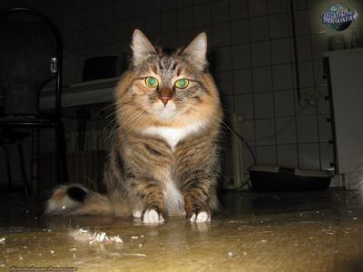Ответ
– У кошек задняя стенка глаза покрыта особыми светоотражающими кристалликами, которые позволяют им лучше видеть в темноте. Благодаря этой особенности, глаза кошек могут отражать свет в темноте, но светиться сами по себе они не могут.
Почему моржи не мерзнут?

Ответ
– Моржи живут в Арктике и, как известно, с удовольствием и подолгу плавают в ледяной воде. Защититься от холода им помогает их удивительно толстая кожа и слой жира под ней.
Почему лягушку-древолаза нельзя погладить?
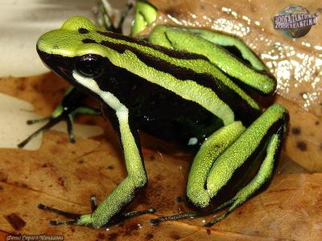Ответ
– Лягушка-древолаз, обитающая в Латинской Америке, крайне ядовита. Она выделяет яд, который покрывает все ее тело и защищает от хищников. Даже простое прикосновение к такой лягушке может вызвать летальный исход.
Почему перед дождем ласточки летают низко?
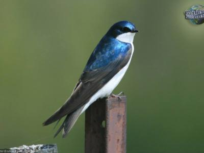Ответ
– Ласточки питаются мелкими насекомыми, которых они ловят в воздухе. В хорошую сухую погоду, теплый воздух поднимает насекомых высоко, и ласточки ловят их на лету. Перед грозой воздух становятся влажным и тяжелым, что вынуждает насекомых опускаться ниже. Следуя за ними, ласточки тоже оказываются ближе к земле.
Почему ежики колючие?
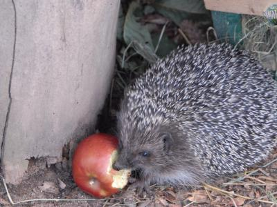Ответ
– Природа наградила ежиков колючками, чтобы сделать их неуязвимыми для врагов.
Почему пингвины не летают?
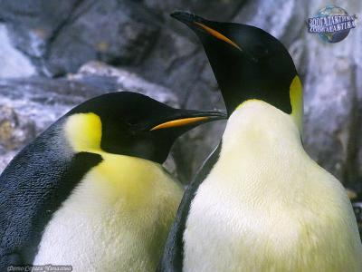Ответ
– Так как пингвины живут на океанских берегах, питаются они исключительно рыбой. Для того, чтобы добывать себе пропитание, они вынуждены много плавать. Для того, чтобы им было проще плавать и нырять, их крылья превратились в нечто подобное плавникам или ластам, и пингвины утратили способность летать.
Почему черная кошка считается плохой приметой?

Ответ
– Такое поверье берет свое начало из древности. В эпоху Средневековья, люди полагали, что черная кошка – это ведьма, которая приняла обличие кошки. Встреча с такой кошкой непременно предвещала несчастье.
Почему Красная Книга красная?
Ответ
– Красный цвет – цвет тревожности и важности проблемы. Своим ярким цветом, эта книга привлекает к себе внимание общественности.
Почему божью коровку так зовут?
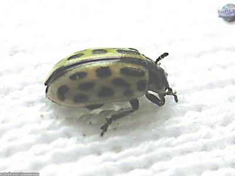Ответ
– Жучок под названием «божья коровка» известен всем. При малейшей опасности, у божьей коровки на ножках выделяется оранжевое молочко, которое несет защитную функцию. Из-за этого она и получила свое прозвище. Слово «божья», вероятнее всего, имеет значение «милая».
Почему леопард прячет добычу на дереве?
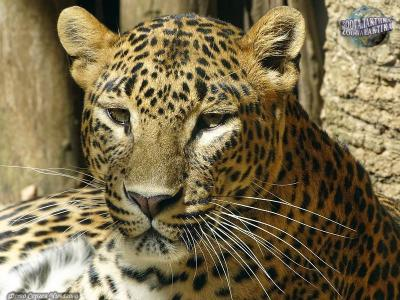Ответ
– Леопард, в отличие от многих других животных, предпочитающий одиночный образ жизни, отлично лазает по деревьям. Укрываясь на дереве и пряча там же свою добычу, леопард спасается, таким образом, от непрошенных гостей, покушающихся на его еду.
Почему кукушонок выкидывает из гнезда яйца?
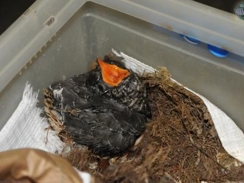Ответ
– Как известно, матери – кукушки не занимаются уходом за своим потомством. Эту работу они «доверяют» другим птицам. Самка кукушки тайком подкладывает свое яйцо в чужое гнездо, и ни о чем не подозревающая птичка высиживает яйцо кукушки вместе со своими. Появившись на свет, кукушонок проявляет крайнюю прожорливость. К тому же, ввиду его крупных размеров, птенцу скоро становится тесно среди своих сводных братьев и сестер, даже если они еще не успели вылупиться. Кукушонок расчищает свою территорию, выбрасывая их из гнезда, одного за другим. Для этого у него на спине есть даже специальная выемка.
Чем нюхают змеи?
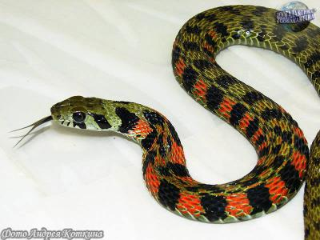Ответ
– У змей отлично развито обоняние. Но нюхают они не носом, а языком. Во рту змеи находится глубокая ямка, «якобсонов» орган. Высунув свой раздвоенный язык на одно лишь мгновение, змея, улавливает микроскопические частицы, находящиеся в воздухе, а затем вкладывает свой язык в ямку и получает всю необходимую информацию.